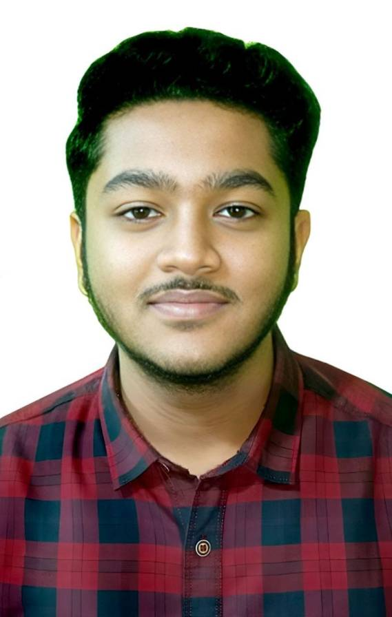

BS-MS Student | IISER Bhopal
Deep interest in Astrophysics including cosmology, stellar evolution, and observational astronomy. Motivated to contribute to scientific research through theoretical and practical approaches.
AI/ML-based air pollution monitoring using satellite & ground data.
Research on alternative methods to angiography & angioplasty.